１．概要
- 実際の作品とそのタイトル 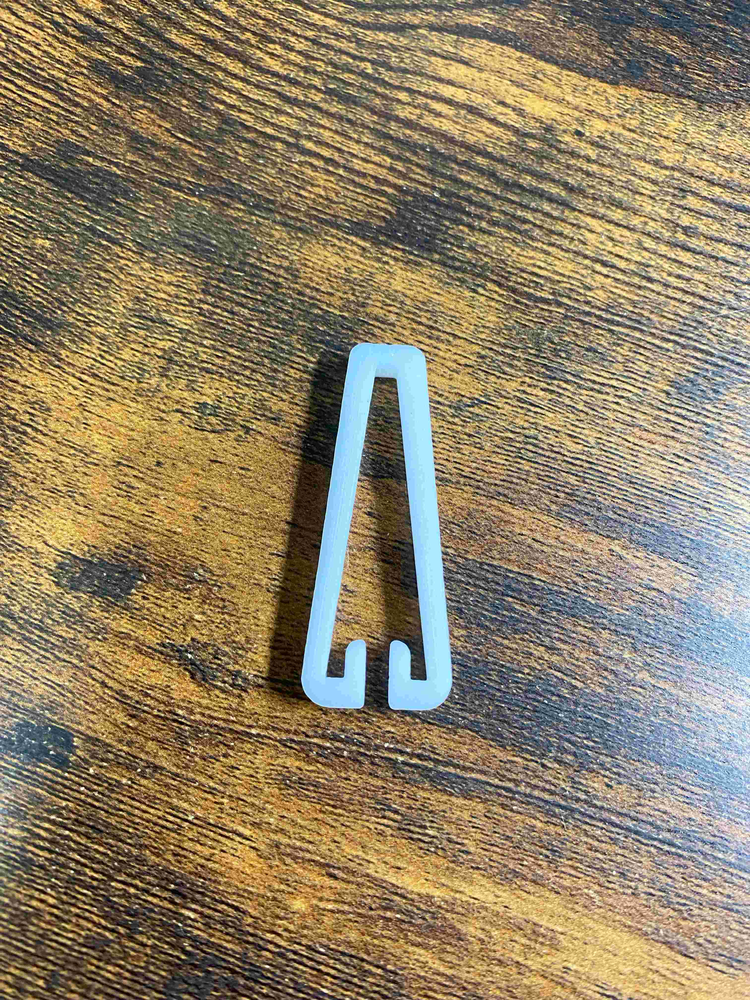
タイトル：ささくれピンセット
作品の説明：ささくれを抜くためだけのピンセットです。
先を平らにすることで、ささくれを抜く際に通常のピンセットと比べて肌に刺さりにくいようにしています。
またはさむ部分に近いところに指を添えて力を入れる構造なので力加減がしやすく、肉を挟むことが少なくなっています
この作品を作った理由：子供のころにささくれを抜くためにピンセットを使ったときに肉を挟んでしまったり、
扱いずらかったこともあり非常にストレスだった。
そのことをポストイットで「逆転」を考えた時に思い出したため、痛くない・扱いやすいピンセットが欲しいと感じたため。
２．製作過程
- スケッチ まず頭の中でできているものを軽く書いておく
- 3Dデータの製作 見た目を全体的に丸くして痛くないイメージにする
- Curaへの変換とデータの作成 Curaを使って3Dプリント用のファイルに変更する
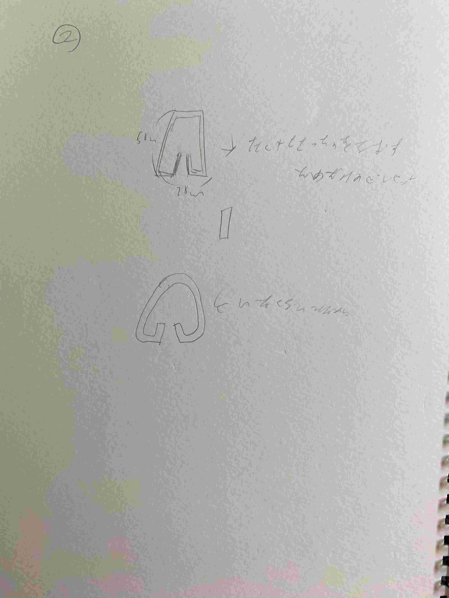
本当に軽ーくかいた
その際に角を丸くするためにFusionのソリッドにあるフィレットを使う
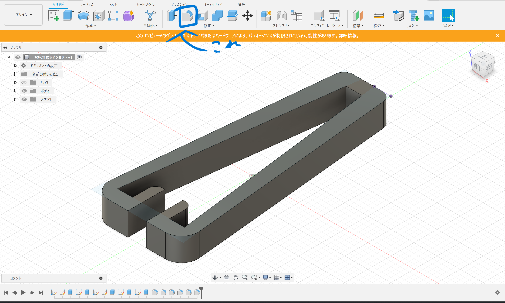
その際に作られていく工程がわかるため、そこでどのように作られていくのかプレビューで確認できる
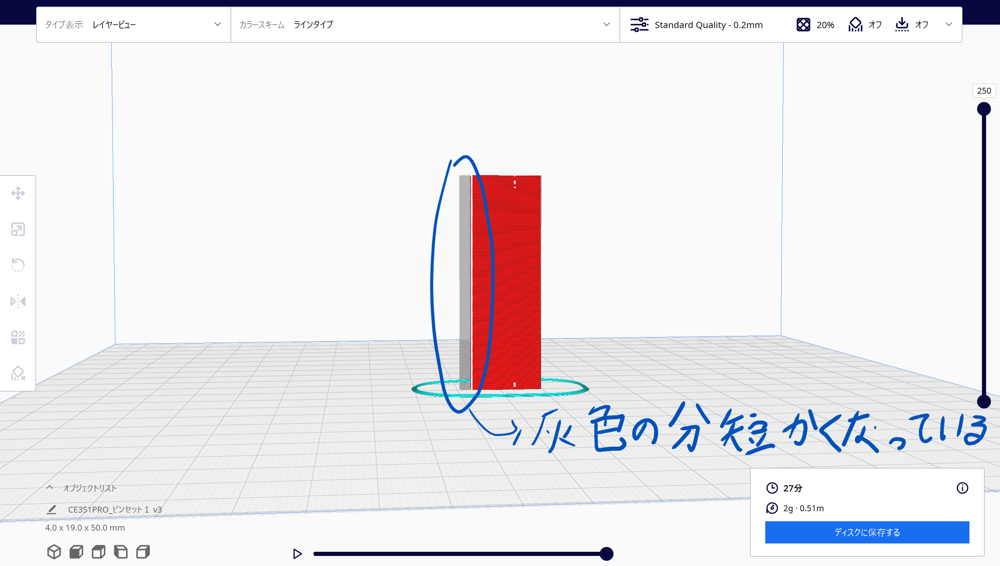
モノによって先端が細すぎる場合は元データより短くなったりするがそれも確認することができる
その他の製作物
- 幅広ピンセット 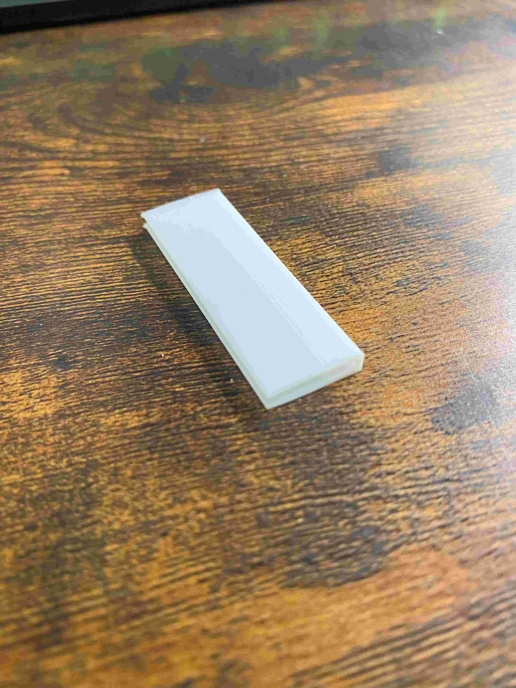
- 持ち運びピンセット 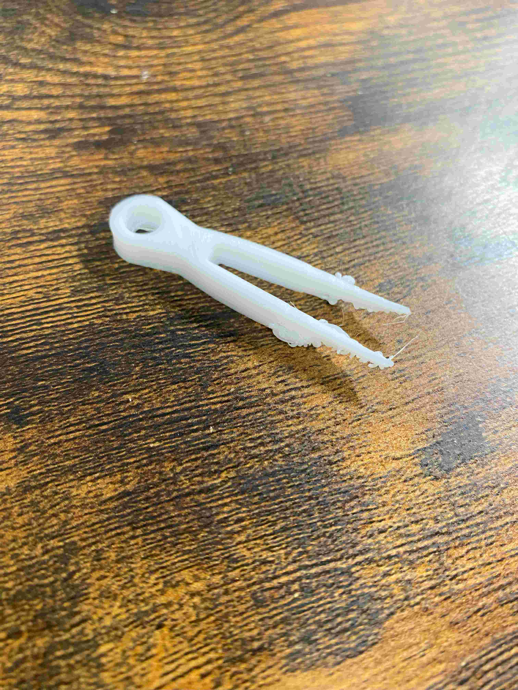
- 持ち運びささくれピンセット 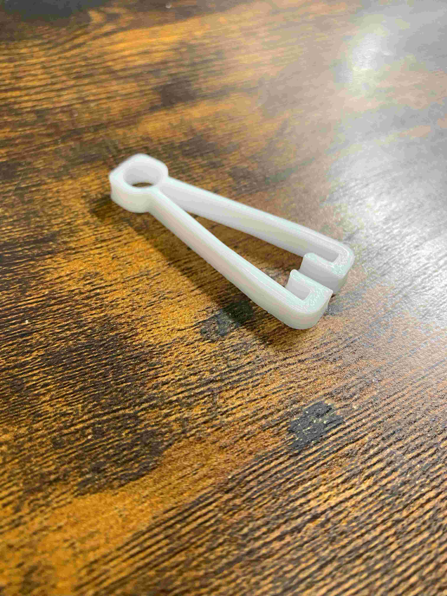
- キーボード角度付け 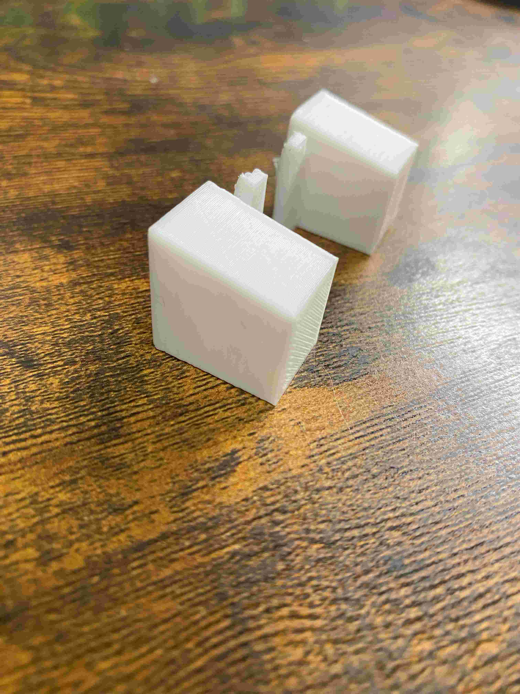
フローリングの隙間や、キーボードの隙間といったところに入ったごみを
すくい上げるようなイメージで作ったピンセット
ただピンセットの厚さが想定よりうすくしなければならないことが判明し、
これ以上薄くするとピンセットの機能を失いかねないうえに、
3Dプリントができるかどうかも怪しかったので製作を断念。
何なら普通のピンセットでその役割を果たせることも分かった
ピンセットも持ち運びしやすくするために上に紐を通せるようにしたピンセット
ストラップ気分で持ち運ぶことを想定していたが、設計時のミスで造形を失敗した
この後持ち運びピンセットを作り直そうとしたときに、ささくれピンセットと合体させる案が思いついた
前述のとおり持ち運びピンセットとささくれピンセットを合体させたピンセット
もはやピンセットですらないが、3Dプリンターで作ったものなので一応記載。
自宅にあるキーボードの角度をつけるための器具が壊れていたので、角度を計算した後3Dプリンターで作成した。
製作物を作っている最中に気づいたこと
製作物を作っている際に気づいた3Dプリンターの特徴を挙げていく
- 底面が広くなる 製作時、台に接地している面が広くなりやすい。
- 浮いている部分はおかしくなる これは授業内でも少し説明をされたが、ほんの少し浮くだけでもおかしくなってしまうため注意が必要 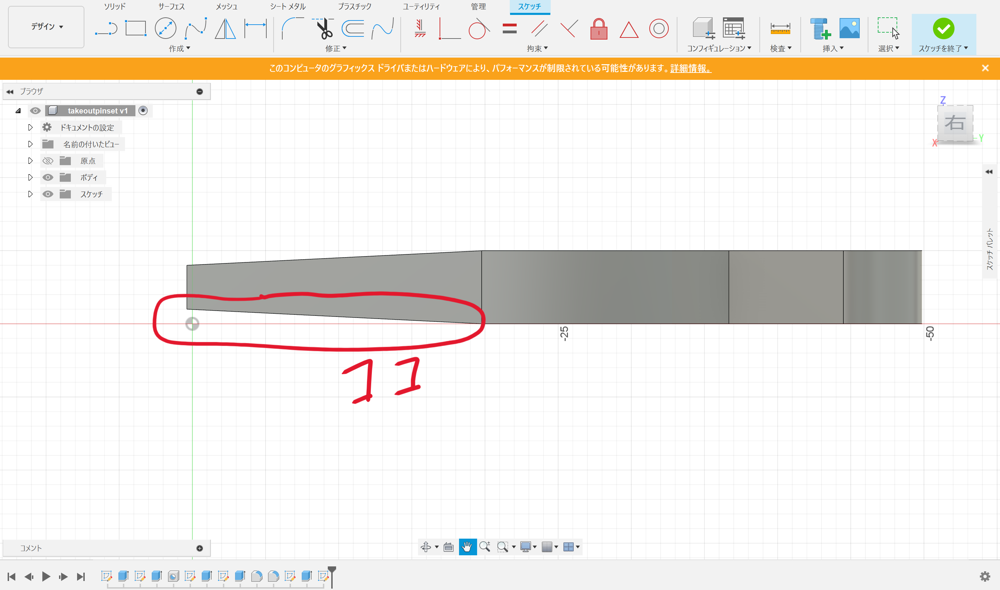
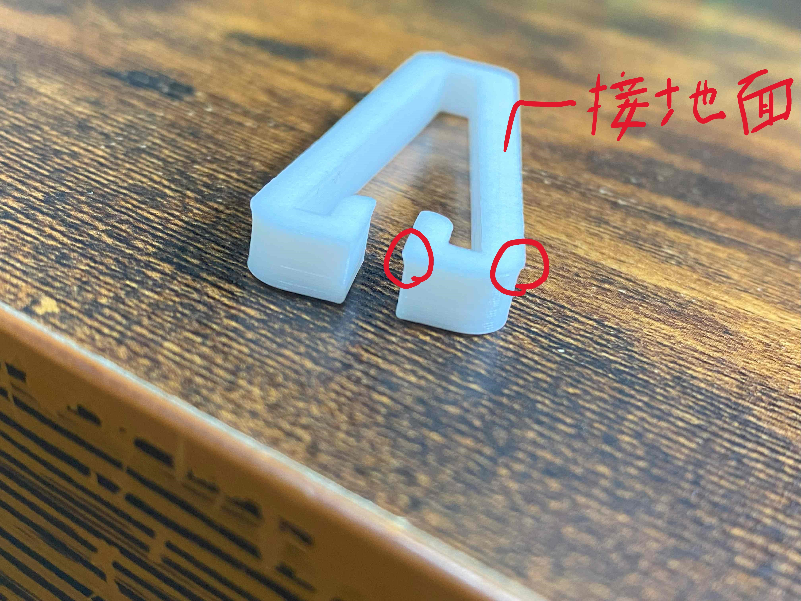
持ち運びピンセットの設計時のスクリーンショットだが先を少し浮かせている。
おそらくこれが原因で造形を失敗した模様。
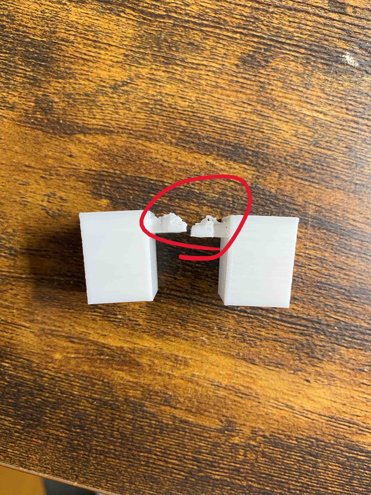
キーボードの角度付けでも少し浮いている部分がおかしくなっている